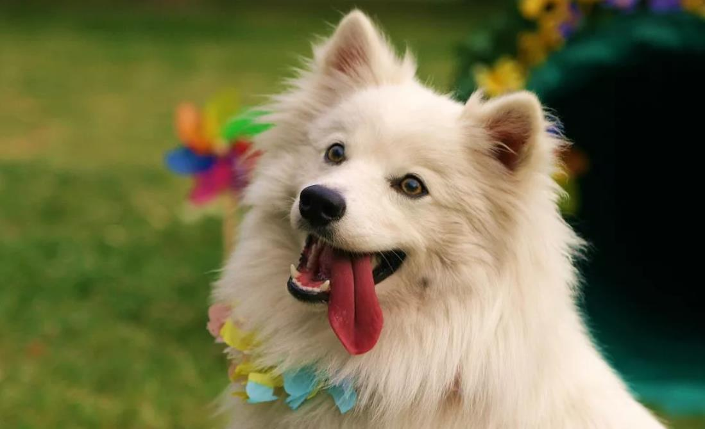
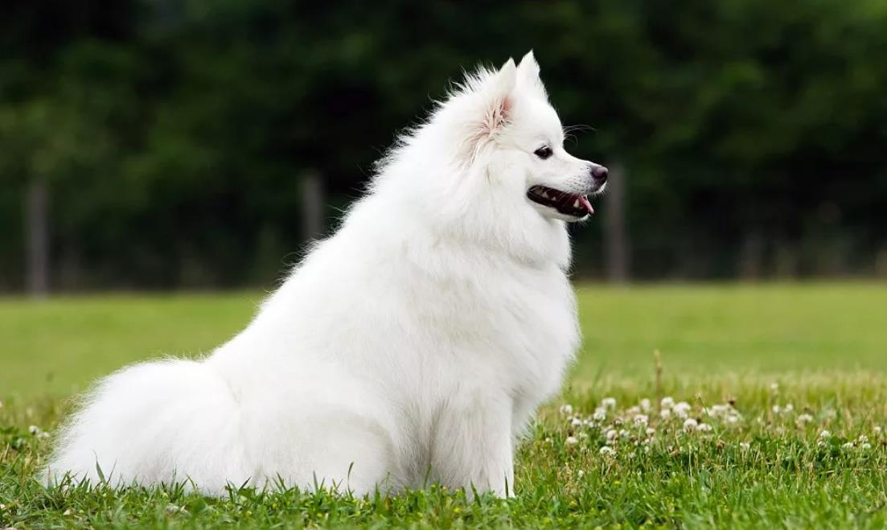

Появилась порода от ветки Немецкого шпица, завезенного в Америку в конце 19 века. Из-за анти немецких настроений собак переименовали в Американских, но спустя 10 лет животные стали непохожими на своих собратьев.
Есть мнение, что в селекции и разведении участвовали Самоедские лайки. Кинологический клуб США новую породу признал и назвал ее эскимосской, а вот мировая организация пока не добавила ее в группу Шпицев.
Это белые собаки с длинной пушистой шерстью и плотным подшерстком. У них типичное телосложение Шпицев, стандартная голова, но уши крупные и с очесами. Песики некрупные, имеют 3 ростовых вариации:
Порода новая, поэтому редко попадаются особи с нестандартным поведением или отклонениями. Американские эскимосы непривередливые: в зависимости от размера могут уживаться и в квартире, и в загородном доме с вольером. Их используют для службы в полиции (можно выдрессировать ищейку или охранного пса), спорта или выставок.

Они ласковые и добрые со своими хозяевами, хорошо относятся к детям, не огрызаются и не злятся. Но с незнакомцами сдержанные, настороженные. Животные всегда активные, игривые, жизнелюбивые, но могут обижаться, лениться или манипулировать владельцами.